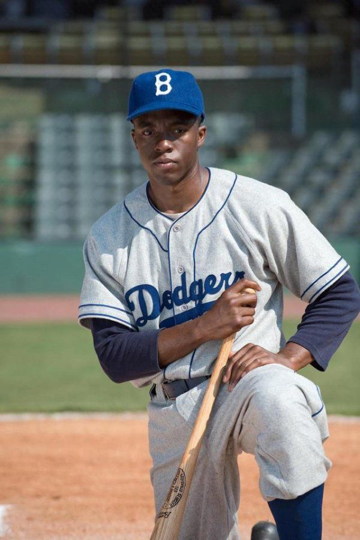

Breakthrough with 42 and Get on Up

In 2008, Boseman moved to Los Angeles to pursue his film and acting career. He was cast in a recurring role on the
television series Lincoln Heights as Nathaniel Ray Taylor, an army veteran with PTSD who was later revealed to be the
son of the main character before re-enlisting. He also appeared in his first feature film in 2008, The Express: The
Ernie Davis Story, as running back Floyd Little. He landed his first regular role in the 2010 television series
Persons Unknown as the Marine Graham McNair. The show received mediocre reviews that felt the characters were all
archetypes with little development. In July 2013, Boseman's second short film as director, Heaven, premiered at
the HollyShorts Film Festival.
Boseman's breakthrough role came in 2013 with the film 42, in which he portrayed the lead role of baseball legend Jackie
Robinson. Boseman had been directing an off-Broadway play in the East Village when he auditioned for the
role, and was considering giving up acting to pursue directing full-time. Robinson's widow, Rachel
Robinson, commented that Boseman's performance was like seeing her husband again. To replicate Robinson's
mannerisms, Boseman trained for five months with professional baseball coaches who "would tape [his] practices every few
weeks, and they would basically split-screen [his technique] with [Robinson's]" to allow him to compare. The
same year, Boseman also starred in the independent film The Kill Hole, which was released in theaters a few weeks before
42.
In 2014, Boseman starred in another sporting film, Draft Day, as fictional football player Vontae Mack. He had
workshopped the Tupac Shakur jukebox musical Holler If Ya Hear Me in 2013, but did not continue to Broadway with it in
order to take the role of James Brown in 2014's Get on Up. As Brown, Boseman did some singing and all of his own
dancing, working with choreographer Aakomon Jones for five to eight hours a day over two months in preparation.
Producer Mick Jagger also directed him on interacting with audiences when performing live music.
Boseman had sold a thriller screenplay to Universal Pictures in 2014, which he continued to collaborate on with creative
partner Logan Coles and planned to star in, and told The Guardian that he still wanted to be a director but would
explore his acting career first, adding that "maybe it'll be easier if you're a successful actor". In 2016, he
starred as Thoth, a deity from Egyptian mythology, in Gods of Egypt. Boseman was one of the few actors of color
featured in the film, which had drawn criticism for using a predominantly white cast to portray Egyptian characters.
Agreeing with the criticism, Boseman said this had motivated him to accept the role, to ensure one of the film's African
characters would be played by someone of African descent.
Marvel Cinematic Universe, Marshall and 21 Bridges
In 2016, Boseman began portraying the Marvel Comics character T'Challa / Black Panther in the Marvel Cinematic Universe.
Captain America: Civil War was his first film in a five-picture deal with Marvel Entertainment. He did not
audition for the role, instead having a "discussion about what [Marvel] wanted to do and how [he] saw it and what [he]
wanted to do." While working on Civil War Boseman learned some Xhosa from John Kani, who played his father, and
insisted on using the language for the character.Boseman also developed a Wakandan accent himself, and used it
during the entire production "whether he was on camera or not". When asked by journalist Ryan Gilbey if he felt
pressure not to "screw up" the beloved comics character, Boseman responded by saying: "It's more positive than that.
It's more like: 'Seize it. Enjoy it.'" He told the Associated Press, though, that he more identified with the Black
Panther's nemesis, Killmonger, knowing that his roots to his African past had been severed. Producer Kevin Feige
explained that the Black Panther was included in Civil War "because [they] needed a third party. needed fresh eyes
[of a character] who wasn't embedded with the Avengers and who has a very different point of view than either Tony or
Steve." Boseman's performance in Civil War was highly praised, though critics acknowledged the character's
inclusion was largely to set up his upcoming headlining movie.
Boseman returned as the Black Panther in 2018, in the Black Panther movie. The film opened to great anticipation, becoming one of the highest-grossing films.
The role earned Boseman a spot on the 2018 Time 100 as one of the world's most influential people, with Sean Combs
writing his entry. It is seen as a landmark in being the first mega-budget movie to have a predominantly black cast
and director, as well as the first superhero film to be nominated for an Academy Award for Best Picture. The film
was also critically well-received and Boseman was praised.
He reprised the role in both Avengers: Infinity War and Avengers: Endgame, which were released in 2018 and 2019,
respectively. Both films were the highest grossing of the year they were released, with Endgame going on to become the
highest-grossing film of all time. Infinity War was filmed at the same time as Black Panther, and Boseman and other
actors playing Wakandan characters improvised chanting scenes in the former that originated in the latter. Boseman's
last physical appearance as Black Panther was in Endgame, at Tony Stark's funeral;he voiced alternate versions of
T'Challa in the 2021 Disney+ animated series What If...?.
Boseman portrayed Thurgood Marshall in the biographical film Marshall in 2017. Set years before he became the first
African American Supreme Court Justice, the movie focuses on one of Marshall's early cases, the trial of Joseph Spell.
It was premiered at Howard University, which both Boseman and Marshall had attended. Boseman was still worried
about being put into a "biopic box", and felt that he didn't look enough like the real Marshall, but took the role
because he enjoyed the script "separate from the historical relevance".
In 2019, he starred in 21 Bridges, an American action thriller film directed by Brian Kirk, as an NYPD detective who
shuts down the eponymous twenty-one bridges of Manhattan to find two suspected cop killers. He was approached to work on
the film by two of its producers, Avengers directors the Russo brothers, at the Infinity War premiere. All of the
film's characters were originally conceived as male and white, with Boseman encouraging amendments to this and other
parts of the story. In his capacity as a producer, Boseman sought out Sienna Miller to be his co-star; Miller, who
was intending to take a break from acting while her daughter was young, asked for a salary that the studio would not
meet, and so Boseman donated the rest from his own pay. He also personally called Stephan James to ask him to play
one of the criminals Boseman's detective is hunting; the two actors had been planning to work more together after the
film. Boseman said that he and Coles "fought for casting and for actors that brought particular sensibilities and
feelings".
Da 5 Bloods and Ma Rainey's Black Bottom
In 2019 Boseman was announced as part of the cast for the Netflix films Da 5 Bloods, directed by Spike Lee, and Ma
Rainey's Black Bottom, directed by George C. Wolfe. He took these "bucket-list roles" for opportunities to
work with Lee and with Ma Rainey producer Denzel Washington, as well as the opportunity to perform in an August Wilson
play, telling Entertainment Weekly that he wanted to make these non-superhero films because "if you don't do the films
that you plan to do, I think you wouldn't feel fulfilled as an artist." He was also cast in a film telling the
story of Yasuke, the only non-Asian samurai and the first black man in Japan, which he was set to co-produce; Boseman
said: "[the story is] not just an action movie, [it is] a cultural event, an exchange, and I am excited to be part of
it." Time included Boseman on their list of the 10 Best Movie Performances of 2020, for both Da 5 Bloods and Ma
Rainey; for Ma Rainey, Boseman received posthumous nominations in the Best Actor category at the Academy Awards,
British Academy Film Awards, Golden Globe Awards, and Screen Actors Guild Awards, becoming the eighth person (and
seventh man) to receive a posthumous Academy Award acting nomination.

_1.jpg)